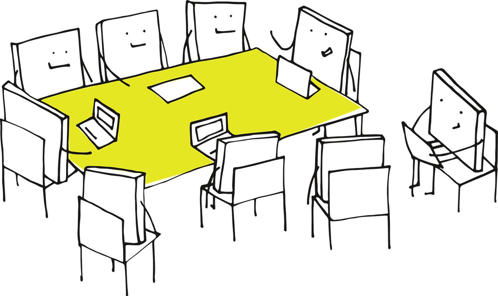

Meet the Team
The Regression Cookbook is created by a cross-disciplinary writing team from the University of British Columbia (UBC). Our team combines expertise in statistics, regression modelling, causal inference, machine learning, computational neuroscience, mathematics, physics, and optimization. Our shared mission is to make regression analysis both approachable and rigorous. We aim to connect theory to practice, emphasize diagnostics and interpretation, and showcase complete, reproducible workflows in R and Python. We are committed to accessibility and affordability, ensuring that our materials are openly licensed, ready for classroom use, and aligned with inclusive teaching practices.

This collaboration features complementary roles, including curriculum design and example curation, code review and reproducibility checks, usability testing with learners, and ongoing improvements based on continuous feedback. You will encounter insights from teaching-stream faculty, postdoctoral fellows, undergraduate students, data science graduates, and doctoral researchers. Their contributions include developing problem sets, proof-checking, and ensuring learner-centered clarity. United by our commitments to clarity, transparency, and open science, we aim to support students, instructors, and practitioners in building a reliable regression toolbox. The profiles below introduce the team and highlight the diverse expertise that contributes to this evolving resource.
Authors
G. Alexi Rodríguez-Arelis
I’m an Assistant Professor of Teaching in the Department of Statistics and Master of Data Science at the University of British Columbia. Throughout my academic and professional journey, I’ve been involved in diverse fields, such as credit risk management, statistical consulting, and data science teaching. My doctoral research in statistics is primarily focused on computer experiments that emulate scientific and engineering systems via Gaussian stochastic processes (i.e., kriging regression). I’m incredibly passionate about teaching regression topics while combining statistical and machine learning contexts.
Andy Tai
I’m a Postdoctoral Teaching and Learning Fellow in the Department of Statistics and Master of Data Science at the University of British Columbia. Throughout my academic and professional journey, I’ve been involved in diverse fields, such as addiction psychiatry, machine learning, and data science teaching. My doctoral research in neuroscience primarily focused on using machine learning to predict the risk of fatal overdose. I am interested in leveraging data science and machine learning to solve complex problems, and I strive to inspire others to explore the vast potential of these fields.
Ben Chen
I hold a Master’s degree in Data Science from the University of British Columbia, and I am passionate about educating others in the fields of statistics and data science. With experience teaching students how to use statistical methods and data science tools, I also enjoy sharing my knowledge through writing. My blog focuses on making complex statistical concepts accessible to everyone. Additionally, I’ve worked on a variety of data science projects, ranging from developing recommendation systems to building Generative Adversarial Network (GAN) models.
Payman Nickchi

I am a Postdoctoral Research and Teaching Fellow in the Department of Statistics and the Master of Data Science (MDS) program at the University of British Columbia (UBC). I completed my PhD in Statistics at Simon Fraser University (SFU), where my research focused on biostatistics and goodness-of-fit tests using empirical distribution functions. I am currently teaching statistical courses in the MDS program at UBC. My passion for statistics, teaching, and data science led me to this role. Outside of work, I enjoy swimming and capturing the night sky through astrophotography.
Collaborators
We extend our warmest thanks to our collaborators whose insight and enthusiasm have strengthened every part of this project. We are especially grateful to Olivia Liu, Aviv Milner, and Michael Sekatchev, whose hard work on chapter drafts, code examples, pedagogical framing, and workflow structure has helped shape the Regression Cookbook into a more rigorous, accessible, and thoughtfully crafted resource.
Your willingness to engage deeply with the material and provide constructive work has made this project richer than it could have been on its own. We are sincerely appreciative of the time, expertise, and encouragement each of you contributed. Thank you for helping build an open education resource (OER) that reflects both technical excellence and the collaborative spirit of the data-science and statistics community.
Olivia Liu
I’m a PhD candidate in Statistics at the University of British Columbia, specializing in computational statistics and convex optimization. My research focuses on convex optimization methods, particularly trend filtering with Poisson loss, and algorithms applied to various domains such as epidemiology. I have two years of part-time experience in consulting through the Applied Statistics and Data Science Group (ASDa) at UBC. I also have served as a teaching assistant for STAT 306 (Finding Relationships in Data) across multiple terms, as well as for the Vancouver Summer Program with ASDa in 2024 and 2025.
Aviv Milner

Aviv Milner is an undergraduate mathematics student at the University of British Columbia with a focus on statistics and quantitative methods for psychology research. After several years working as a product manager in software, he returned to academia to work on problems at the intersection of data analysis, reproducible science, and statistical education. He has completed multiple quantitative psychology research projects and earned undergraduate research awards for work on methodological and replication-focused topics. Aviv’s interests include rock climbing, hiking, camping and exploring the beautiful nature of BC.
Michael Sekatchev
I hold a Bachelor’s and Master’s degree in Physics from the University of British Columbia (UBC), and began my PhD in Nuclear Engineering at the University of California, Berkeley in August 2025. My research focuses on dark matter in the form of axions. I have a strong interest in open education resources (OER) as a way to facilitate equitable access to education, with a particular focus on the development of open-access textbooks: in addition to this project, I designed mechanics problems for the “OER Mechanics Project”, a collaboration between UBC and Douglas College to develop an open-source mechanics textbook. I am also co-authoring “Speaking and Writing Physics 101: The Language of Solving First-year Physics Problems”, an open-source textbook designed to help non-native English speakers better understand physics concepts and strengthen their communication skills in scientific English.